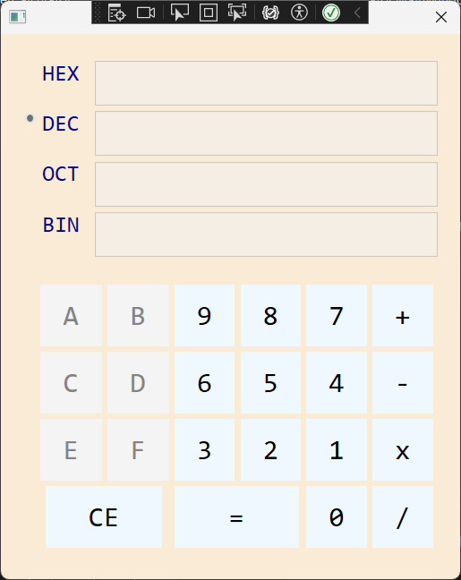

John Joshua Delfin
Software Developer
Phone
Email
23-0179c@sgen.edu.ph
Location
Las Pinas, Philippines
About me
I'm a Software Developer from Las Pinas, Phillippines, working in desktop applications. I personally love to challenge myself with projects that are worth spending time and effort on.
My goal is to show my dedication in making desktop applications in the simplest way possible. As a third-year college student, I still have a long way to go, but I'm confident that I have the potential to bring the most out of my talents.
My Previous Projects
In this project, we are asked to create a game for converting decimal to binary. We needed to implement a difficulty standard to make an appealing game. Most importantly, we must have a user interface that we think is suitable for the game.

As a starting project, we have been asked to create a simple address book, featuring the use of list boxes with some sorting logic behind. This was a great practice for practing list box as I was able to use it in every other project that I had.
In this activity, the idea was to make the button randomized its position on the window.The goal was for the user to click the button as fast as they can. It was a great practice for manipulating margin dynamically.

Originally, we were asked to create a scientific calculator. However, I was given a different task, which is a programmer calculator. Unlike scientific calculator, which deals only with decimal numbers, I was dealing with the number system. It was challenging but a great project to work with.